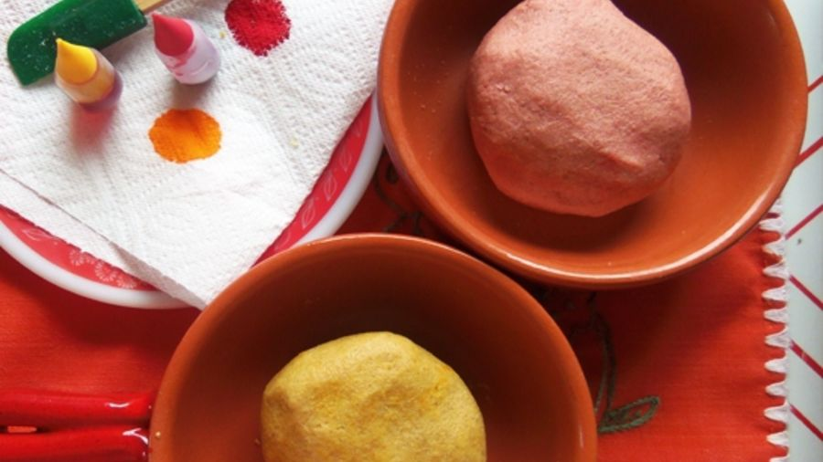
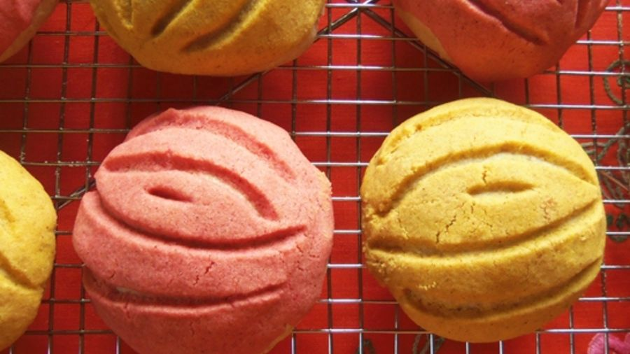

* 1 paquete de levadura seca activa
* 1/2 taza de agua tibia (115 grados F)
* 1/2 taza de leche evaporada tibia (115 grados F)
* 1/3 taza de azúcar
* 1/3 taza de mantequilla derretida
* 1 huevo

* 1 cucharadita de sal
* 3 tazas de harina multiuso
* 1 taza de harina integral
* 1/2 cucharadita de canela molida
* 1/2 cucharadita de anís molido
Ralladura de una naranja
* 1/2 taza de mantequilla blanda

* 2/3 tazas de azúcar
* 1 taza de harina multipropósito
* 2 cucharaditas de canela molida
* 1 cucharadita de vainilla
* Colorante rojo y amarillo para alimentos
1. En un recipiente grande, mezcla la levadura y el agua tibia. Deja reposar durante 10 minutos.
2. Agrega la leche, 1/3 taza de azúcar, 1/3 taza de mantequilla, el huevo, la ralladura de naranja y la sal. Añade gradualmente la harina, 1/2 cucharadita de canela y 1/2 cucharadita de anís.
3. Traslada la masa a una superficie enharinada. Amasa entre 3 y 5 minutos.
4. Forma una bola. Transfiere la masa a un recipiente engrasado grande y estira de manera uniforme. Cubre y deja leudar en un lugar tibio durante 1 hora y 20 minutos.
5. En un recipiente, bate la mantequilla blanda en la batidora durante 30 segundos. Agrega las 2/3 tazas de azúcar y continúa batiendo hasta que esté bien unido. Añade la taza de harina, las 2 cucharaditas de canela y la vainilla. Divide este preparado para la decoración a la mitad, y transfiérelo a dos recipientes de vidrio.
6. Agrega un par de gotas de colorante para alimentos, por separado para cada recipiente, hasta que hayas logrado el color que deseas.
7. Golpea la masa. Cubre y deja reposar durante 10 minutos.
8. Divide la masa en 12 bolas uniformes. Coloca las bolas a unas 3 pulgadas de distancia en charolas para hornear forradas con papel encerado. Presiona levemente cada bola. Divide el preparado para la decoración en 12 bolas y aplasta cada una. Coloca una bola aplastada encima de cada bola de masa.
9. Con un cuchillo afilado, haz pequeños cortes en la parte superior para imitar los surcos de las conchas de vieiras. Cubre y deja leudar en un lugar tibio durante otros 45 minutos.
10. Mientras tanto, precalienta el horno a 375 grados F. Hornea los bollos entre 15 y 20 minutos o hasta que estén dorados. Retira de las charolas. Deja que se enfríen sobre una rejilla.